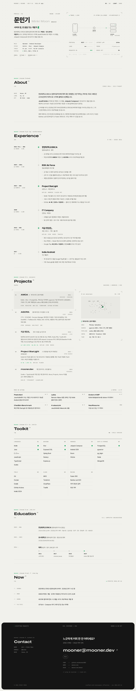
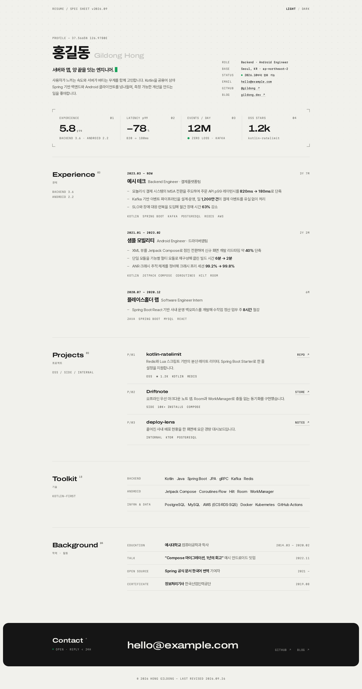
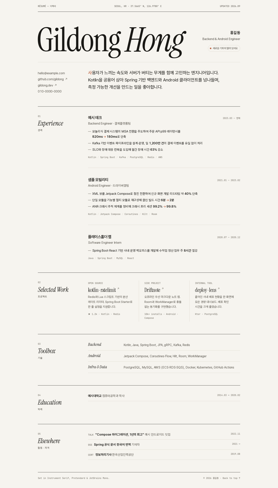
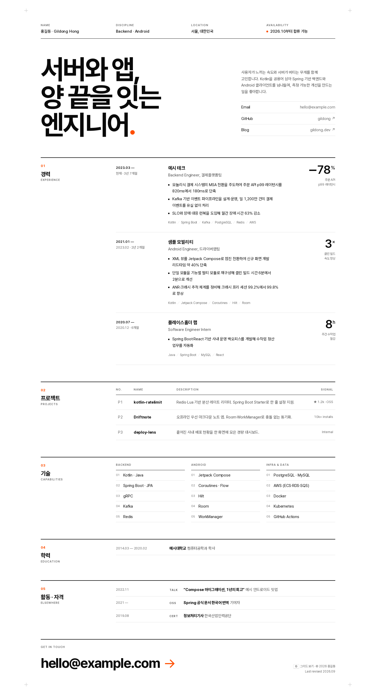
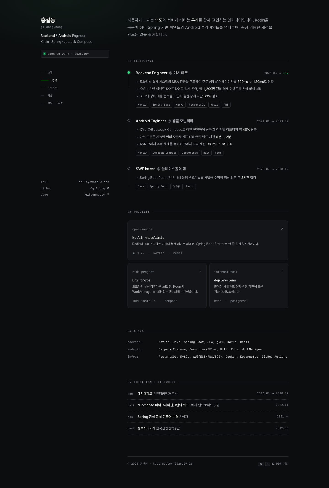
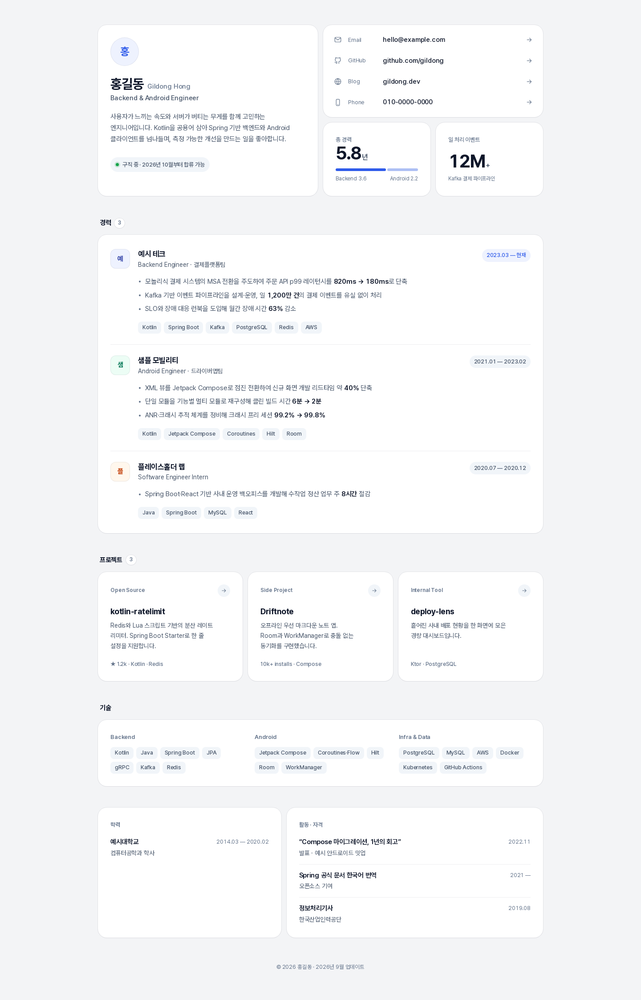
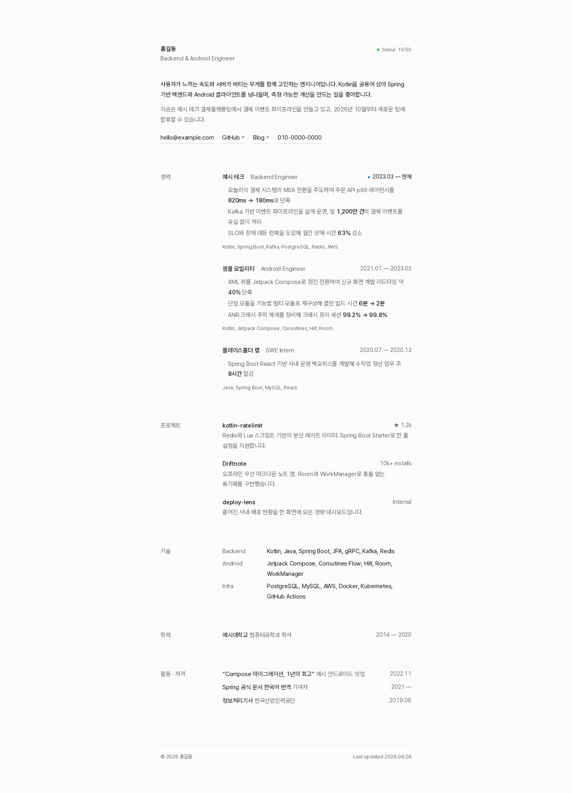

같은 플레이스홀더 내용(레이아웃에 맞게 일부 표현만 조정), 서로 다른 방향. 시안을 클릭하면 실제 페이지가 열립니다.

문민기 실제 이력 반영(resume-demo + mooner.dev). 계기판 히어로(REST/SSE/Cache), 다이아몬드 타임라인, 프로젝트 스펙 프리뷰, now.log.

F와 같은 시각 언어를 정적으로. 지표 스트립, 스티키 섹션 라벨, 인쇄 친화적 밀도.

잡지 같은 타이포그래피. 거대한 세리프 이름, 좌측 스티키 섹션 라벨, 콜로폰 푸터.

엄격한 그리드와 굵은 헤드라인. 경력마다 핵심 지표를 크게 배치. G 키로 그리드 표시.

개발자 톤의 다크 테마. 커밋 그래프형 타임라인, 스크롤 연동 사이드 목차.

부드러운 카드와 벤토 헤더. 경력 비율 바, 시스템 다크 모드 자동 대응.

좁은 단일 컬럼, 색 대신 명도로만 위계. 호버 시 형제 항목 디밍, 서울 실시간 시계.